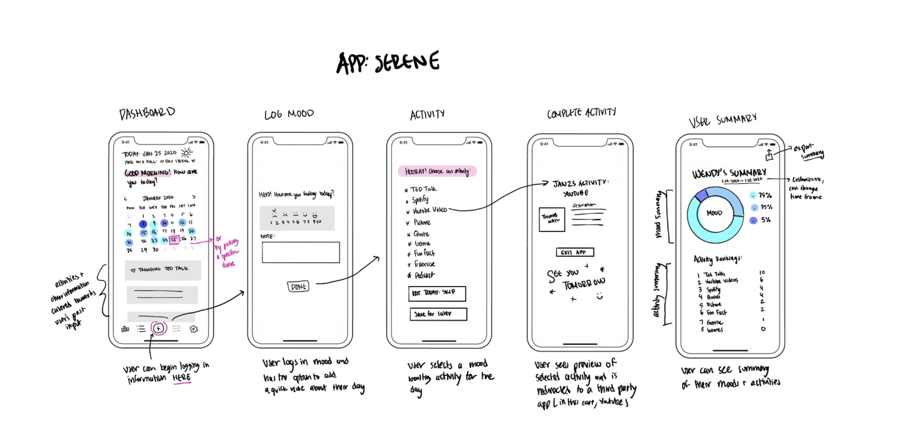
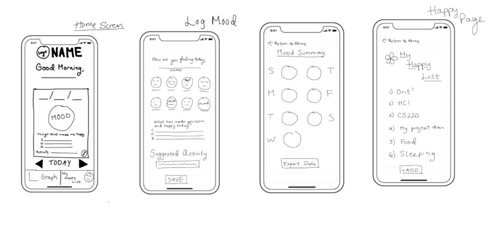

Based on our user personas and three main task uses for the application, we came up with three usage scenarios:
Stable Stacey:
As part of her nightly “health check-up” routine, Stable Stacey examines her mood data and its trends
from the past few days. She notices that it has been relatively stable, but slightly lower than expected,
due to prolonged amounts of time alone and in isolation. She logs that information as a mental note to
remember for the following days. To prepare some mood-lifting activities for the next few days to counter
her current mood trends, she scrolls through the list of activities that have previously made her happy
and calm. She jots 2-3 of them down on her daily planner and then exits the app to go to sleep.
Downcast Delores:
She strives to make sense of the impact the current events have had on her life and figure out what has made her
happy previously. She also plans to share her daily activities (from the app) with her friend.
Downcast Dolores chooses to generate a mood summary of the past 6 months from the app using a pie chart
and a ranked table that shows how many times she chose a specific activity (such
as a Ted Talk or inspirational quote). After exporting her summary as a PNG,
she notices that 80% of her mood inputs in the last 6 months were positive, but due to the current events,
it seems a lot worse. Based on the data, she acknowledges that she was happy for several months before
the COVID-19 pandemic started, and is hopeful that she will be happy again when things settle down.
Downcast Dolores shares her summary with her friend and recommends her friend watch Ted Talks and
cat videos since she finds that they help her gain motivation and lift up her moods the most.
Wary Wendy:
Wary Wendy, a Sophomore from Boston, has had a tough day and remembers she made a commitment to herself
to start using that mood log her friends told her to download. After brushing her teeth before bed, she
clicks the central “Log” icon on the app’s homepage and clicks the anxious emoji and exhausted/ exasperated
emoji recalling how she felt earlier when she heard about a friend being pepper-sprayed at a Black Lives
Matter protest in Chicago. Before saving the log Wendy adds “Pam was pepper-sprayed” to the notes section,
returns to the home page, and selects the activities icon and chooses a funny video of cats with babies
to cheer herself up.
Part II: Design Directions
To start out, we made sketches to brainstorm possibilities for our app’s interface.
Design A:

Our rationale for this design is that we wanted the homepage/ dashboard to appear warm and inviting.
It offers a calendar format of logging since that is the app’s main purpose, states the date, a
greeting, and a little symbol to represent the weather. This homepage also features a menu at the
bottom providing easy navigation to other pages of the app.
This design’s log page is simple and aimed at not overwhelming the user with a basic rating scale
of 1-10 on how they feel.
The activities page provides plenty of options, then follows up with a confirmation page before
leaving the app to complete an activity.
The user summary page features a graphical representation of past moods along with commonly chosen activities.
Design B:

This design’s homepage features a little bit more personalization with the user’s name included in the
greeting. Instead of a calendar format, it starts out with the logging button in the center of the
screen and right and left arrows to navigate to other days.
The mood logging page in this design features emoticons which are familiar among young mobile phone
users, and suggests an activity on the same age where users log their mood in order to further promote
usage of that feature.
The mood summary page of this design would be organized by says of the week include an overall
emoticon to symbolize the mood of a given day.
This design also included a gratitude/ happiness list for post-mood logging since studies have
shown mental health benefits overtime when people reflect on positives regularly.
Part III: Peer Feedback
We shared our design ideas with classmates and these were the major takeaways:
First Impressions:
“It seems so friendly! I think it offers a great range of options for a user no matter what they want to do with the app. It shows the possibilities for users and encourages them to explore.”
“I love the calendar idea. I think it resembles what some people put on their paper bullet journals. It would be very helpful for users to analyze their past mood based on the data.”
“I liked that it greats the user and acts as a sort of digital diary. Seems appropriate in that trying to create a positive emotion in user to improve their mood, while still allowing them to track their mood.”
Design:
“The sketches look like they will give way to a dynamic interface that allows people to understand their moods and the patterns that go with them.”
“I think users would really like it. Emotions seem like they're separated from analysis, but I have personally found that I enjoy being able to analyze how my mood has been. I think this empowers users to notice trends and make changes that make them feel better.”
“The design aesthetics seem to be very simple and calming. The audience will probably feel immediately feel better by the pleasing design. I like how they kept it simple, so that using the application won't add more stress.”
Suggestions:
“Discretized emotions seems restrictive and is a personal pet peeve of mine in mood trackers, I think that a wider range of emotions/some kind of slider/emotion wheel could make the app more versatile and personalized.”
“I would tie in more concrete mental health resources (virtual therapy, pre-recorded therapy lessons, guided meditation) into the app.”
“I appreciate the interactive interface, but since it may come off as overwhelming perhaps adding features to make it more customizable could help.”